Inicialmente me plantee la situación de partir no de un problema ya identificado y plantear posibles soluciones sino que a partir de un conjunto de datos que pudiera ser interesante identificar posibles usos que se le podrían dar a los datos procesados para mejorar algún proceso, identificar problemas y solucionarlos, aumentar ganancias de una empresa, etc. Encontré datasets públicos obtenidos a partir del uso de la plataforma de alquiler de alojamientos Airbnb. Los dataset corresponden a distintas ciudades donde funciona el servicio. Algunas de las ciudades que tienen datasets disponibles en la web son: Amsterdam, Barcelona, Buenos Aires, Londres, Roma, etc. Para realizar un estudio de los atributos se selecciona el dataset de Buenos Aires y lo cargo en RapidMiner.
Id es un entero que identifica a la publicación
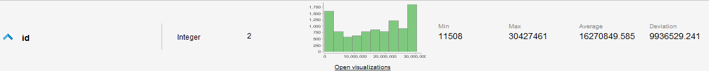
Name es un texto que corresponde a la descripción de la publicación
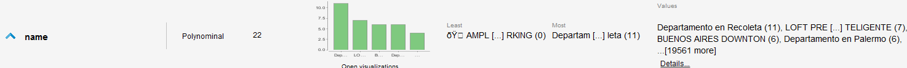
Host id es un entero que identifica al dueño de la publicación
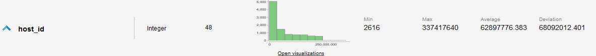
Host name es un texto con el nombre del dueño de la publicación
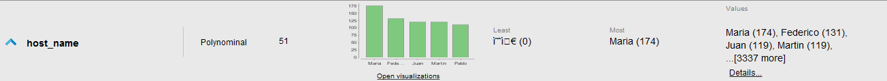
No existe ni descripción ni datos para este atributo
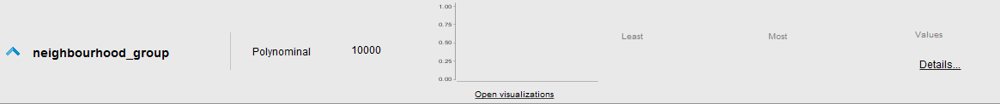
Barrio al que pertenece la publicación, definido como polinominal
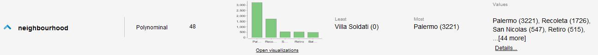
Latitud y longitud de la ubicación del inmueble
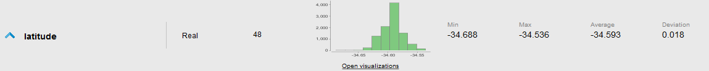
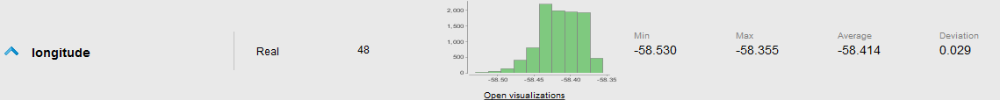
Room type es un valor polinominal que corresponde al tipo de inmueble que se alquila
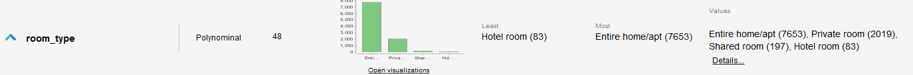
Price corresponde al valor del alquiler en moneda local. Rápidamente se logra identificar un valor totalmente alejado del resto que no se condice con la descripción de la publicación. Se supone que corresponde a un error de tipeo al ingresar el dato.
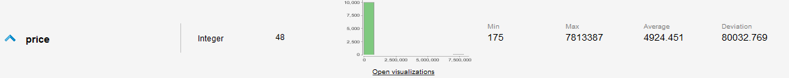
Dato erróneo de precio:
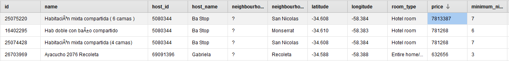
Se decide eliminar el dato. También se identifican valores faltantes en precio que son sustituidos por el valor de precio promedio.
Minimum nights dice la minima cantidad de noches que se debe alquilar en el inmuebe
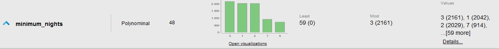
Number of reviews indica la cantidad de reseñas que recibió la publicación hasta el momento
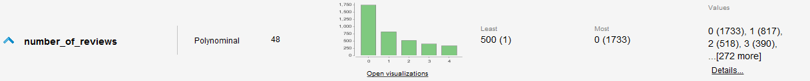
Last review indica la fecha de la última reseña recibida por la publicación
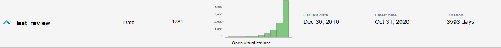
Reviews per month da la cantidad de reviews que recibió la publicación en el último mes
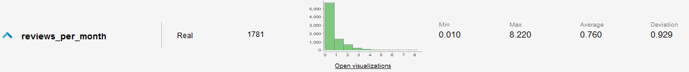
Calculated host listings count es la cantidad de públicaciones que posee cada hospedador
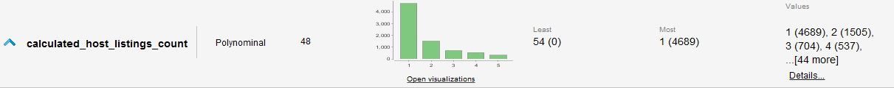
Availability 365 ofrece la disponibilidad en días del inmueble para los próximos 365 días.
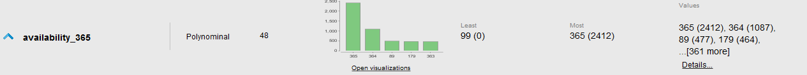
Asistir al usuario que crea una nueva publicación a elegir el precio de alquiler adecuado
Identificar sentimiento de las reviews recibidas por un usuario
Identificar tipos de viviendas más comunes por barrioy las más preferidas por los clientes
Identificar momentos del año donde se realizan más reviews(por lo tanto más alquileres y más margen de ganancia al hospedador).
El caso de estudio se basará en la oportunidad de la elección del precio adecuado para un nuevo alquiler
Del atributo reviews_per_month se identifican muchos valores faltantes que se corresponde con publicaciones que no tienen reviews totales por lo tanto se procede a setear dichos atributos como 0.
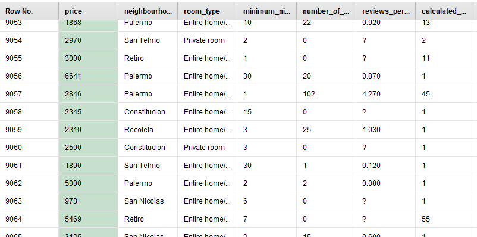
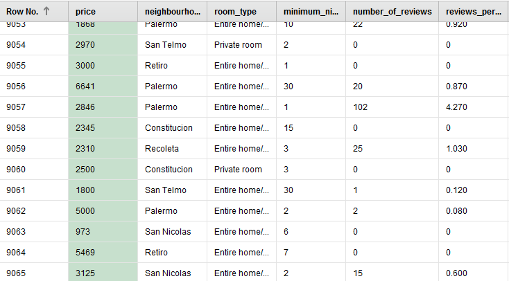